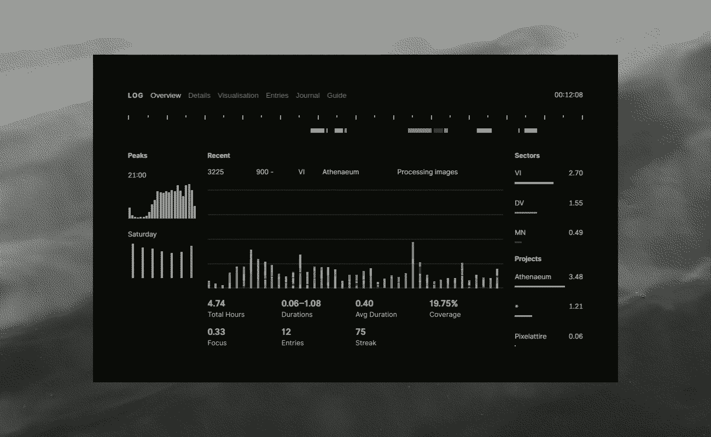

Log is a time-tracker, inspired by similar systems by Neauoire and vi, designed for single-tasking: start a log, focus on your task, and then end it when you're done.
Commands are entered via a console. The app has a built-in Guide that contains a list of commands and their usage.
Log is available as an Electron app for Linux and macOS and can be downloaded on itch.io.
A CLI variant and a mobile app is being planned. The CLI variant is more likely to be created soon. Mobile app development is not a possibility with my current resources.
Twig is a tool for converting datetime to Log's hexadecimal format. It's useful for manual editing of log entries.
Here is a list of other time-tracking tools built by friends.
When performance is measured, performance improves. When performance is measured and reported, the rate of improvement accelerates.
Thomas Monson
L0617–Z0718 · 977 logs · 468.41 h · 380.32 DV · 64.92 VI · 17.46 MN · 5.72 RE